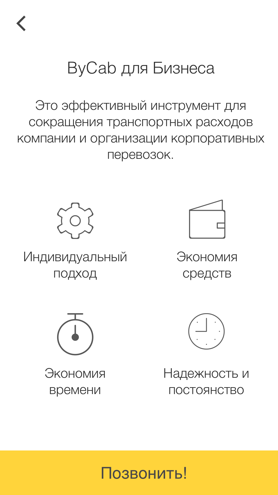
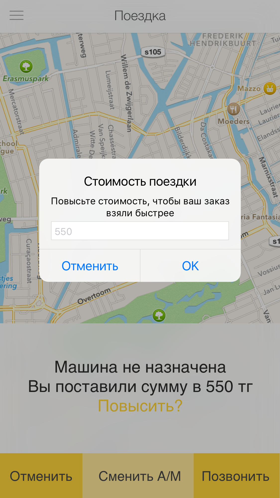
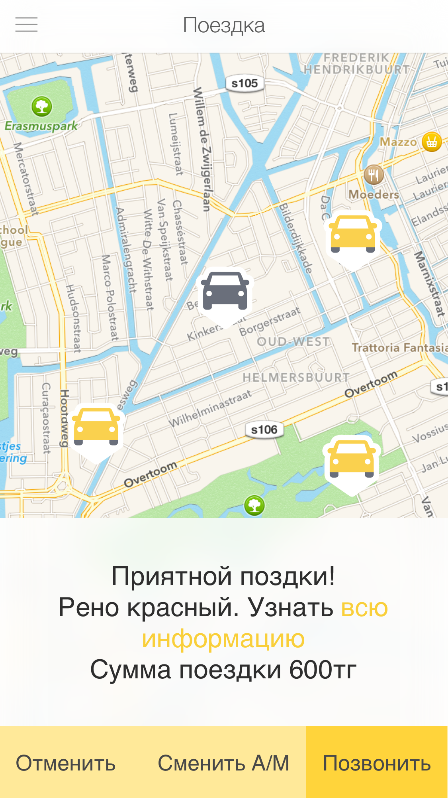

Welcome to GitHub Pages.
Pro Retouch
googlePlay


Atyrau Taxi
  Meshly
appstore"


Youdrive
appstore"
YLEISURHEILU
appstore"


Vetcare
Google play"


Porukka
Google play"


YLEISURHEILU
appstore"
Teeren Senaatti
appstore"


Taxi econom
appstore"


aidamaster
http://landing-dew.ru/master/index.php
FindLost24
FindLost

Soul Intension
Soul IntensionDesigner Templates
We’ve crafted some handsome templates for you to use. Go ahead and click 'Continue to layouts' to browse through them. You can easily go back to edit your page before publishing. After publishing your page, you can revisit the page generator and switch to another theme. Your Page content will be preserved.
Creating pages manually
If you prefer to not use the automatic generator, push a branch named gh-pages to your repository to create a page manually. In addition to supporting regular HTML content, GitHub Pages support Jekyll, a simple, blog aware static site generator. Jekyll makes it easy to create site-wide headers and footers without having to copy them across every page. It also offers intelligent blog support and other advanced templating features.
Authors and Contributors
You can @mention a GitHub username to generate a link to their profile. The resulting <a> element will link to the contributor’s GitHub Profile. For example: In 2007, Chris Wanstrath (@defunkt), PJ Hyett (@pjhyett), and Tom Preston-Werner (@mojombo) founded GitHub.
Support or Contact
Having trouble with Pages? Check out our documentation or contact support and we’ll help you sort it out.